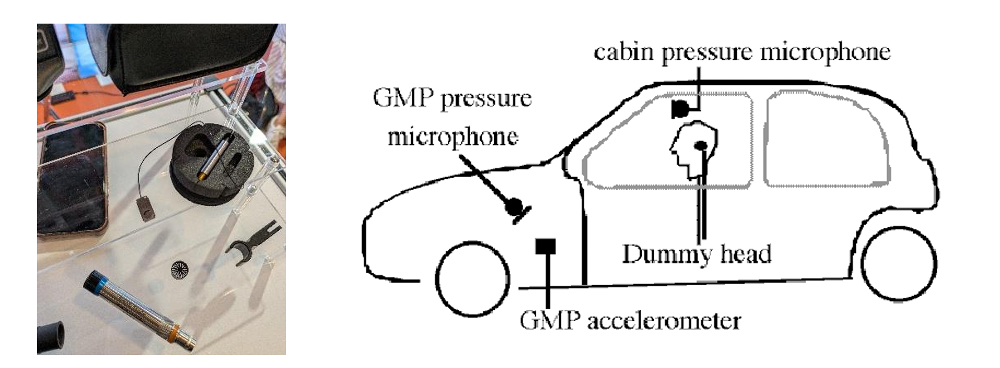
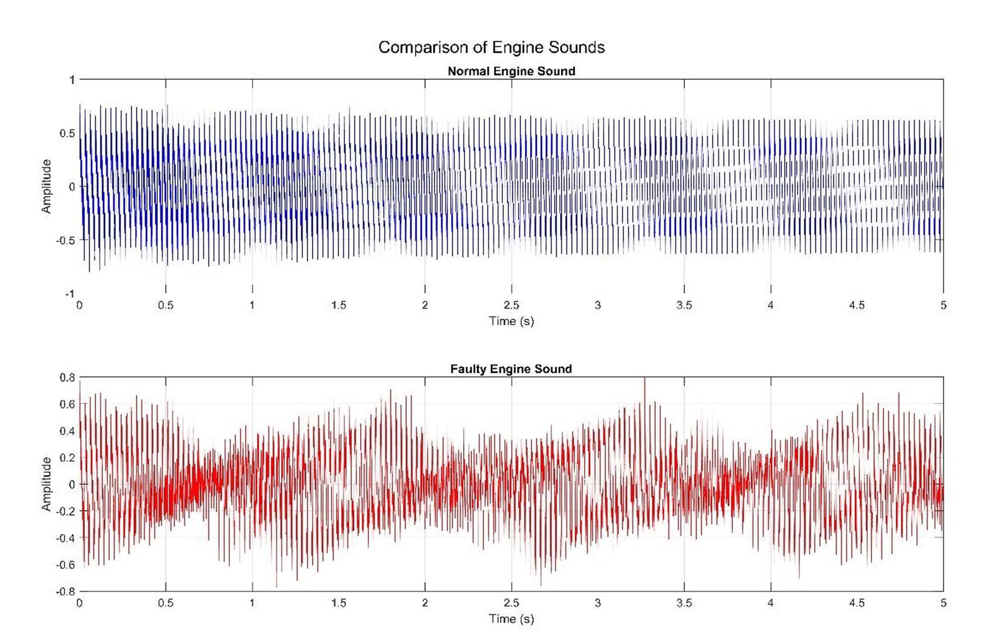
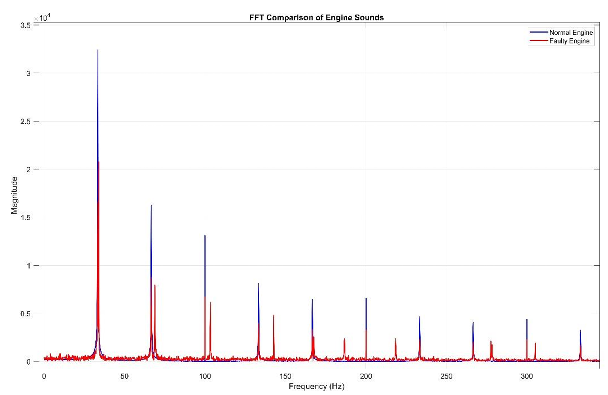

📄 Recorded at 44.1 kHz, 16‑bit, mono converted. Steady harmonic content, low crest factor.
📄 Same engine but with mechanical irregularities – impulsive noise, higher kurtosis & crest factor.



| Feature | Normal Engine | Faulty Engine | Interpretation |
|---|---|---|---|
| RMS (amplitude) | 0.31469 | 0.23875 | Lower RMS → energy loss / inconsistent combustion |
| Crest Factor (peak/RMS) | 2.5444 | 3.343 | ⬆️ Higher crest factor → impulsive noise (gear rattle) |
| Skewness | −0.002 (≈0) | +0.258 | Positive skew → asymmetric impacts |
| Kurtosis (peakiness) | 1.97 | 2.60 | 🔥 Elevated kurtosis → heavy tails, intermittent impacts (rattle) |
| Modulation Frequency (Hz) | 0 (not dominant) | 0 (below threshold) | Modulation visually present but statistically weak |
| Dominant Carrier (kHz) | ~5.0 | ~4.9 | Main engine tone preserved |
✅ Key finding: Crest factor > 3.0 and kurtosis > 2.5 indicate mechanical faults (gear rattle / misalignment) even when modulation frequency is not explicit. Spectral kurtosis map (not shown here but in the original report) further confirms high‑frequency transients between 4‑8 kHz.
In automotive diagnostics, acoustic analysis has emerged as a non‑invasive method to identify abnormal behaviours such as gear rattle, misfires, or bearing wear. Engine sounds contain valuable information that can be used to detect mechanical faults, monitor performance, and improve maintenance strategies. The purpose of this project is to compare and analyse audio recordings of a normal engine with a faulty engine sound through a series of signal processing techniques implemented in MATLAB. By applying filtering, time‑frequency analysis (spectrograms, continuous wavelet transforms), FFT, and error metrics, differences between the two signals can be quantitatively and visually assessed.
a) STFT: Short‑time Fourier transform with window lengths 1024 (high temporal resolution) and 4096 (high frequency resolution). Overlap 90%.
b) Envelope & Hilbert transform: \( e[k] = |\mathcal{H}\{x[k]\}| \) to detect modulation and impacts.
c) Spectral Kurtosis: \( \kappa(n) = \frac{\frac{1}{L}\sum |E(n,l)|^4}{\left(\frac{1}{L}\sum |E(n,l)|^2\right)^2} \) – identifies non‑stationary impulsive components (gear rattle).
Publicly available engine recordings (44.1 kHz, 16‑bit, WAV) – healthy vs faulty (same engine type). Pressure microphones mounted inside cabin and near gearbox. Sampling frequency ≥10 kHz ensures capture of high‑frequency rattle phenomena. Our recordings were downsampled to 22.05 kHz for processing but original 44.1 kHz used for analysis.
Stereo to mono conversion, detrending (mean subtraction), amplitude normalisation, Hilbert envelope extraction, and time‑frequency representations via STFT (short/long windows).
The faulty engine exhibits increased spread in spectrograms and noisier sidebands around 5 kHz. Envelope STFT shows subtle vertical smearing (amplitude modulation). DIY spectral kurtosis map (bottom‑right in original report) reveals significantly elevated kurtosis values between 4–8 kHz for the faulty engine, indicating sharp impacts / gear backlash. The normal engine maintains low, uniform kurtosis.
Feature table correlation: Faulty engine: lower RMS (0.23875 vs 0.31469), higher crest factor (3.343 vs 2.544), higher kurtosis (2.60 vs 1.97). These are classic markers of impulsive noise from mechanical faults such as gear rattle or early misalignment.
Both recordings (5 sec each) were analysed. Although the extracted modulation frequency remained 0 Hz (below threshold), the combination of crest factor and kurtosis successfully discriminated the faulty condition. Carrier frequency remained consistent (~5 kHz), confirming that the primary engine tone is unchanged, but amplitude distribution and impulsiveness vary due to the fault.
These metrics quantify the difference between normal and faulty signals in the time domain; the low SNR confirms strong dissimilarity caused by fault transients.
Future work: Real‑time fault detection embedded in vehicle ECUs, integration of accelerometers + microphones, machine learning classification on larger datasets, and fleet‑level predictive maintenance.
Conclusion: Acoustic signal analysis effectively detects engine faults (gear rattle, misalignment) using metrics like crest factor and spectral kurtosis. Time‑frequency methods provide non‑invasive, early diagnosis for automotive systems. The study confirms that even without explicit modulation peaks, statistical features (kurtosis > 2.5, crest factor > 3.0) reliably indicate mechanical anomalies.
[1] M. Bodden, R. Heinrichs. Analysis of the time structure of gear rattle. Internoise 99.
[2] R. Heinrichs, M. Bodden. Perceptual and instrumental description of the gear‑rattle phenomenon. Proc. Int. Congress on Sound and Vibration, Copenhagen, 3103‑3112.
normal_engine.wav, faulty_engine.wav). All figures are generated from the same analysis pipeline.